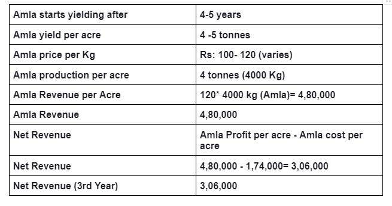
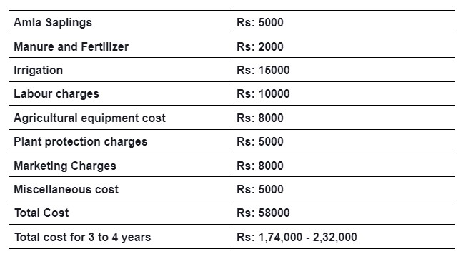

Amla has a unique place in India’s botanical heritage. The scientific name for the Indian gooseberry tree is Emblica Officinalis. Indian gooseberry is its common name. This fruit used in Ayurvedic medicine for centuries because of its significant health benefits.
This is a summer fruit and amla extract used for hair loss treatment. India exports a good amount of amla and amla extracts to the United States and other countries as well.
Amla: Types and Origin of Indian Gooseberry
This is a deciduous tree native to Southeast Asian countries and India as well. It belongs to the family of Phyllanthaceae.
These fruit trees grow well in a tropical climate. There are various types of fruits with differences in color, size, and taste.
Types of Amla
- Banarasi
- Chakaiya
- Kanchan
- Francis.
How to Grow Indian Gooseberry: A Guide to Cultivation
Amla farming has increased recently because of the increasing demand for gooseberry in the market. Its nutritional quality makes it a superfood that contains vitamins and minerals good for health.
Farming involves careful selection of soil, climate conditions, and proper irrigation. A well-conditioned Indian gooseberry tree has bore fruits for more than three centuries. It makes farming a sustainable and reliable source of income.
Planting and Cultivation:
Small plants require well-drained soil, enough sunlight, and regular watering. Growing plants from seeds or young saplings during the growing season will ensure a successful growth rate. The gooseberry cultivation process includes selecting suitable land, preparing the soil for planting, and spacing the young saplings accordingly. Irrigation and nutrient-rich soil will play an important role in the healthy growth of the plants.
Climate:
Plants grow in tropical climates. The young plants require more protection from the hot winds of summer. Mature trees can tolerate high temperatures with a limit of up to 46°C. An annual rainfall of 630–800 mm gives a good yield from the plants.
Soil:
The soil should be well-drained, fertile loamy soil. It grows in light and heavy soils but it doesn’t grow well in sandy soil. This plant can adapt to growing in dry regions.
Propagation and planting:
Farmers grow Gooseberry from seeds. Seed-propagated trees bear low-quality fruits and have a long gestation period. To get good results in amla trees farmers use a special method called shield budding. One-year-old saplings with buds collected from high-quality plants bear large fruits.
Mature trees with low quality can become better by a simple process. In May or June, plant new saplings and dig holes 4.5 meters apart. Every hole should be about 1 cubic meter in size. Farmers should Keep the pits in sunlight for 15 to 20 days.
After that put the topsoil mixed with 15kg of farmyard manure and one kg of super-phosphate back into the holes. Lastly, plant the new saplings in these holes and you will have better trees.
Plant protection:
Gooseberry is a key ingredient in Ayurvedic medicine and other product preparations. it’s anti-oxidant and anti-inflammatory properties, people widely use it. Farmers use natural fertilizers like cow dung, vermicompost, and green manures. These natural fertilizers help the plants grow well and produce a good amount of fruits.
They also protect the plants from certain fungal diseases. Sometimes, farmers use bio-pesticides made from neem kernels, seeds, neem leaves, chitrakmool, datura, etc. This will keep harmful pests and insects away from the plants.
Irrigation:
Indian gooseberry trees need water regularly and on time, especially in the summer. Water the plants regularly as they grow well. Once the trees are big and making fruit, continue watering them every two weeks. This helps more fruit and prevents them from falling off too soon.
Put water right at the root of the plant. It prevents water from disappearing into the air. The Indian Gooseberry trees don’t need a lot of water when it’s monsoon season. From October to November, make sure each mature plant gets 25 to 30 liters of water through drip irrigation.
Pruning Method:
Trimming the plant on time will bring good results. Keeping only 4 to 5 strong and healthy tree branches on each tree while trimming, remove any sick or dead branches. Trimming should done at the end of December.
Mulching:
Farmers do the mulching process in the summer. Put paddy straw around the base of the gooseberry plant, about 15 to 20 cm away from the trunk.
Harvesting:
Plants produce fruits after 7-8 years of planting but grafted young plants start fruiting in the 5th year. The color begins as light green, and as the plant grows, it changes to a dull greenish-yellow.
The ideal time to collect the fruits is in February because that’s when they have the highest vitamin C content. Harvesting amla with hands or using a machine to collect the fruit.
Farming Challenges and Risks
As with any agricultural endeavor, farming comes with its own set of challenges. Most pests and diseases can affect the crop’s growth and yield. Implementing effective pest management strategies and adopting organic and natural farming methods can help mitigate these farming challenges.
Mitigating Diseases
Plants are receptive to certain diseases like rust, powdery mildew, and fruit rot. It is very important to monitor the crops regularly, including plant hygiene and timely treatment with any fungicides. It will improve the growth of plants and manage any diseases or further infections.
Pest and disease control measures in farming
Amla plants often face problems with bugs and diseases. This involves caterpillars eating the barks. Bugs create unusual growths on shoots, hairy caterpillars, aphids, mealybugs, bugs harming the plant, and insects that dig into the plant.
Plants suffer from fruit rot, leaf rust, anthracnose (a type of fungus that attacks plants), dying branches, and fruit spoilage.
To tackle these fungal diseases, use certain solutions like 1% Bordeaux mixture, 0.3% mancozeb, 0.1% carbendazim, and 0.3% copper oxy-chloride.
Cost of production:
The cost of production includes total expenses related to saplings, fertilizers, irrigation charges, pest control, labor charges, and crop maintenance. To calculate the cost of production, it is crucial to determine the selling price and maximize crop profits.
The cost of labor per person per day varies from 250 rupees to 700 rupees in different regions of our country.
Amla farming cost of production

Source: National Horticulture Board and Agricultural Magazine
Amla farming Revenue (per acre)

Market and its crop Buyers
Amla farming offers a promising opportunity in the agricultural sector of the country. Amla plantations are profitable for farmers. They have many uses in medicine and the commercial market.
Amla holds immense commercial value. Its applications in various Ayurvedic formulations and health supplements contribute to its high demand in the market. Its market includes fresh fruits and processed products like amla powder, amla tablets, and amla hair oil.
Amla Fruit extracts are popular in Ayurvedic medicine. Food products such as pickles, juice, powder, and candy utilize gooseberry making it a valuable market. farmers can connect with crop buyers and agro-processing companies, which can ensure a steady market for amla produce.
Amla Farming Income Returns:
Income will come from the 4th year onwards. Farmers can intercrop using vegetables, and medicinal plants. This will bring an extra return of 50,000 rupees annually.
- The yield of the fruit ranges from 4-5 tons( in the first year of commercial production), After 5 years of plantation.
- commercial production starts after 5 years from grafted plants. After this increases to 8 tons in the 5th year and stabilizes thereafter.
The prices change from farm to farm, market to market, place to place.
- Farm price = 100 to 120 rupees (October 2023)
- Income of 4 tons (an average yield per acre) in the first year of commercial production.
4000* 120= 4,80,000
- For eg: Indian Gooseberry per kg = 166 rupees per Kg is the maximum price.
- Minimum selling price =126 rupees per Kg. (October 2023)
The Yield of Indian Gooseberry:
A fully grown 10-year-old amla tree produces 50–70 kg of fruit. A well-maintained tree can yield up to 70 years. Because of that, amla farming is very profitable for the farmers.
Amla benefits: Ayurvedic Medicine
Indian gooseberry has been a remarkable ingredient in Ayurvedic medicine for centuries. Its amazing healing properties and rich nutrient content make it a valuable component in various traditional medicines and wellness products. The diverse uses of Indian gooseberry are an integral part of Indian culture and wellness practices.
Amla’s applications range from traditional medicine and food products to skin-health care products. It helps with weight loss, reduces inflammation, and is good for heart disease patients. There are no side effects of eating amla. Consuming amla reduces the chance of getting cancer cells in the body.
Indian gooseberry plays a crucial role in Ayurvedic medicine, particularly in ‘Chyawanprash’. It stabilizes the immune system and possesses anti-aging qualities.
Diabetic patients benefit from consuming gooseberry. Its richness in vitamins and anti-oxidant properties make it a popular choice for home remedies. Ayurveda recommends its use for diabetic patients.
Indian gooseberry: Amla’s Health benefits and Medicinal use
The health benefits are vast and encompass various aspects of overall well-being. It aids in digestion, enhances skin health, promotes hair growth, and helps manage diabetes. Amla’s antioxidant properties contribute to new cell formation and support heart health.
Eating gooseberry regularly boosts the immune system, helps with weight management, and naturally detoxifies the body. Amla is nutrition-enriched and has anti-oxidant properties. It controls blood sugar levels in the body.
The Importance of Amla Seeds
Amla seeds, found within the fruit, possess significant therapeutic potential. These seeds are a rich source of protein and fatty acids.
Amla’s uses: anti-oxidant properties
Amla is full of vitamin C, which is like a super protector for our bodies. Vitamin C fights against bad things called free radicals that can hurt our cells. It helps reduce the chance of serious diseases like cancer and heart problems. Vitamin C in amla also keeps our skin looking young and fresh, so it’s like a friend for our skin too.
Amla Products
Eating amla products boosts the immune system. People who want to improve their hair growth can use amla hair oil and amla reetha shikakai powder. These products make the hair follicles strong and help the hair grow better.
Amla products are also great for people with diabetes because they can help control sugar levels in the blood.
Amla is also full of good things like vitamins and minerals that keep you healthy and make your skin look nice. Eating gooseberry will improve eye health and reduce the chance of getting heart disease.
You can easily add amla food products like amla juice, amla candy, or amla murabba to your diet.
Conclusion
Amla, the Indian gooseberry, stands as a testament to the wealth of natural resources that our country possesses. Amla farming and the many products made from it make a lasting impact on the world of health and wellness. These trees produce more fruits in dry climates. It can last up to 70 years with minimal investment and care.
Farmers can sustain amla trees for up to 70 years with just a little investment and care. Its high medicinal value makes it a top priority for a profitable business.
I hope you had a fantastic time experiencing amla farming with Zetta Farms!
FAQ: Frequently asked questions
1. How many years does it typically take for an amla tree to reach maturity and start bearing fruit?
Ans: It usually takes about 4 to 6 years for an amla tree to reach maturity. Plants produce fruits after 7 to 8 years of planting. However, this timeline can vary depending on factors such as soil quality, climate, and care provided to the tree.
2. Is it possible to cultivate an amla tree at home for personal consumption or gardening purposes?
Ans: Yes, it’s entirely possible to grow an amla tree at home for personal consumption or gardening purposes. Just ensure they receive enough sunlight, well-drained soil, and regular watering. With patience and proper care, you can enjoy fresh amla from your tree.
3. During which season does the amla tree typically experience growth and bear fruit?
Ans: The amla tree typically experiences growth and bears fruit during the spring and early summer seasons. During these periods, the tree is most active in its growth, and the fruits develop and mature, ready for harvesting.
4. What is the typical lifespan or longevity of an amla tree?
Ans: The typical lifespan or longevity of an amla tree is extensive, ranging from 60 to 70 years or even more.
5. Is there scientific evidence supporting the claim that amla juice aids in weight reduction?
Ans: There is some scientific evidence suggesting that amla, or Indian gooseberry, may support weight management. Amla is low in calories and high in fiber, which can help you feel full and reduce your overall calorie intake.
6. Is consuming amla considered highly beneficial for hair health, according to expert opinion or scientific evidence?
Ans: Amla has lots of vitamins that make hair follicles healthier, leading to stronger hair and encouraging growth. It also helps prevent premature greying and supports healthy scalp conditions.
7. Does original amla or amla powder give the same benefit?
Ans: Yes, both original amla (fresh fruit) and amla powder provide similar benefits.